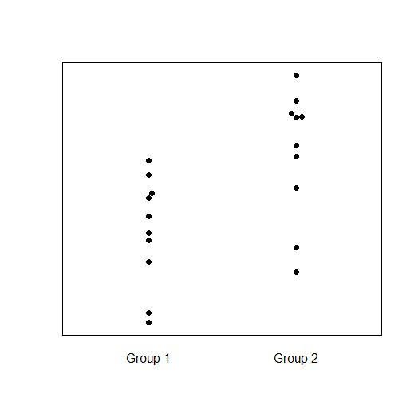

By now you should know that t-test tests whether the means of two groups of data are different (this might be
two independent groups, such as native speakers vs. L2ers, or it might be two dependent/paired groups, such as
people's pretest scores and those same people's post-test scores). ANOVA tests whether the means of two
or more groups are different. If you do ANOVA with two groups
of data, it's equivalent to a t-test. But if you have more than two groups, ANOVA tests whether there is a
significant difference anywhere within that set of groups. For example, imagine you compare speakers of
three languages (English, Mandarin, and Cantonese) on some measure. There are three pairwise comparisons you could
make here: English vs. Mandarin, English vs. Cantonese, or Mandarin vs. Cantonese. (And that's not even starting to
think about more complex comparisons, like "English vs. the average of Mandarin and Cantonese".) You could analyze
this by doing three separate t-tests. Or, you could first do an ANOVA, which will tell you whether
any of these comparisons shows a significant difference. If your ANOVA suggests that there are no
significant differences among these groups, then you don't need to bother doing the three t-tests; the ANOVA
already told you there's nothing to find here. On the other hand, if your ANOVA suggests that there is a significant
difference among these groups, then you will need to go ahead and do t-test to figure out exactly which
pair of groups (or which complex difference) shows the difference.
The reason I rarely do this is because I don't do research like this. Think about the module on research questions and
hypotheses: "there is some difference somewhere within these three groups I measured" is a crappy hypothesis. Usually
if I bothered to collect data from three groups, then I already have some specific hypotheses (e.g., "I think
Cantonese will be significantly higher than English but not significantly higher than Mandarin") and I just directly
go to those t-tests. However, there may be some limited situations where this kind of ANOVA is useful. For
example, if you truly do have a ton of data from a ton of groups and you don't have predictions about it, then doing
an ANOVA (rather than a ton of t-tests) can at least tell you whether it's worthwhile to look into the
comparisons in more detail. If the ANOVA doesn't come out significant, then you know you have no justification to
look into more specific comparisons.
Describe a situation relevant to your own research in which you might use ANOVA. Also describe an alternative way
you could analyze the same data with one or more t-tests.
Remember that t-tests work by comparing the mean of one condition to the mean of another condition (review the
"Introduction to inferential statistics and t-tests" module to review the specific formula for this). How does ANOVA
work? Let's first think about how ANOVA works for an analysis with only two conditions (groups), and then generalize
that to analyses with more conditions. We won't get into the specific math or formulae here (you can find that in any
statistics textbook or many websites and online tutorials), but just the general logic.
As its name implies, ANOVA works by analyzing the variance in your dataset. In a dataset with two groups, there are two
kinds of variance: within-group variance and between-groups variance. Between-groups variance is
how much different one group is from the other. Within-group variance is how much the data (e.g. the people) within
the same group are different from each other. ANOVA essentially takes a ratio between the two:
\(\frac{between}{within}\)
If the between-groups variance is much bigger than the within-group variance, that means that two people from different
groups tend to be much more different than two people from the same group—in other words, the group difference
is pretty big. In this situation, this ratio will be higher than 1, and the ANOVA will be likely to be significant.
On the other hand, if the between-groups variance is smaller than the within-group variance, that means there is very
little difference between the groups. In this situation, this ratio will be lower than 1, and the ANOVA will not be
significant.
For example, imagine if we took a group of 2-year-old babies and a group of adult NBA basketball players and measured
their heights. 2-year-old babies are pretty short, and NBA basketball players are pretty tall, so the between-groups
variation is very big. Likewise, there's not a lot of variation in height among two-year-old babies (they're all
small), and not a lot of variation among NBA basketball players (they're all tall), so within-groups variation is
very small. The between/within ratio will be very big, and the ANOVA will surely come out significant.
Alternatively, imagine if we took a group of PhD students from PolyU and a group of PhD students from HKU. I don't have
any particular reason to believe that PolyU students tend to be taller or shorter than HKU students; the
between-groups difference is probably pretty small. But there's a lot of variation within groups; even in our own
class we probably have some short students and some tall students. (Thinking about CBS professors, who used to be
PhD students, there are some short ones like me and Yao, and some tall ones like Prof. Huang.) So the within-groups
variation is big. The between/within ratio in this case will be small (probably below 1), and the ANOVA will surely
not be significant.
This stuff all works the same for an ANOVA with more than two groups. It's still examining how much variation there is
between the groups (in this case, several groups), vs. how much variation there is within each group.
From this discussion, you should realize there are at least four possible combinations of variances (here I'm ignoring
more complicated situations where one group has a lot of within-group variance and another group doesn't):
- between is high, within is low
- between is low, within is high
- between is high, within is high
- between is low, within is low
For this question, choose at least three
of the above combinations, and for each one prepare the following stuff:
- A graph showing what the data for this combination should look like. You can use a scatterplot like the example
shown below. Unlike this example, your graph should have meaningful labels for the y-axis and the group names
(i.e., you should think of a realistic scenario in which you might see this data pattern, similar to what I did
above for the NBA and PolyU/HKU examples). If you aren't comfortable using software like Excel/R/etc. to make a
graph, feel free to just draw by hand and take a photo of your drawing.
- A statement of which combination this is (e.g. between-high within-low; between-low within-low; etc.)
- A statement of whether you think this dataset would likely show a significant ANOVA effect or not
